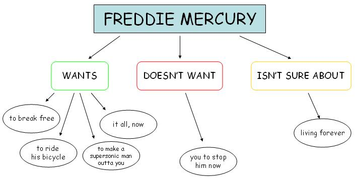
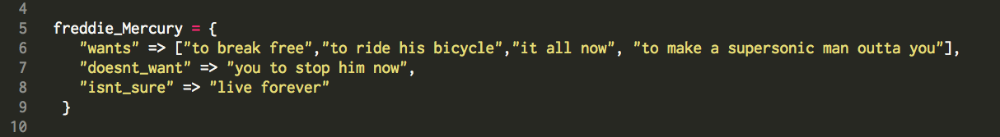
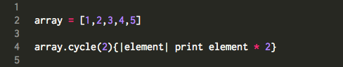
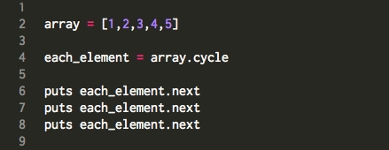
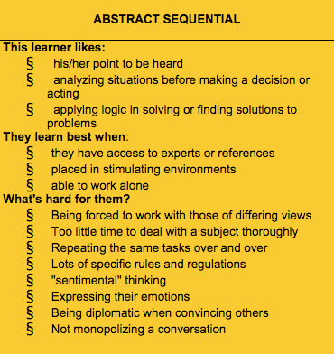
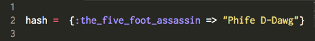

Bloc Proc Lambda
Not Some Weird Developer Fraternity
October 26, 2014
Strap on your thinking caps, noobs! (or strap off your yawn caps as it were) because it's time for another edition of Dionne's DBC technical blog! This week's topic falls squarely in the center of that ever-elusive subject of Object Orientated Programming! Glance at the links--they're helpul! Specifically, this week I will be covering the topic of blocs, procs and lambdas. Read on for your own edification:
Blocs
By now, if you've read any of my previous technical blog entries, you've probably encountered blocs or blocks many times. Blocks are code blocks--snippets of code that can be found between {curly braces} or do and end syntax
The above shot from my code editor shows a common method #each being called with code blocks that are formed between {curly braces} and betweendo and end. The reason to show both kinds of blocks is to demonstrate one coding convention in Ruby: if your block is only going to take up one line of code, the convention is to use the {curly braces} otherwise, use do and end syntax.
Here's some other useful things to remember about code blocks:
- If you're associating a block with a method, it must always appear to the right of the method
- If you declare a variable for the first time within a code block, you will only be able to access it there.
- A code block is not actually an object in Ruby. Thus its not a really useful form for repeating tasks
In combination with methods, code blocks are super useful for executing bits of code in singular situations. When we want to be able to access the functionality of a block multiple times, we turn to the other subjects of today's post: Procs and Lambdas
Procs
Let's start this section of with an image, shall we?
Reactive IO has a sweet and succint explanation of Procs or Procedures, which is essentially the following:
We may want to have many different blocks at our disposal and use them multiple times. As such, passing the same block again and again would require us to repeat ourself[sic]. However, as Ruby is fully object-oriented, this can be handled quite cleanly by saving reusable code as an object itself. This reusable code is called a Proc (short for procedure). The only difference between blocks and Procs is that a block is a Proc that cannot be saved, and as such, is a one time use solution.
In the above image, the Proc (and it's usefulness) can be seen beginning on the line that includes Proc.new. Do you see how the Proc is assigned to a variable, and how that variable is used multiple times? This is awesome, right!? Procs provide a way to "objectify" blocks. They make it such that blocks can be accessed again and again. (Note to invoke your Proc, you must call the #call method)
Lambdas
Last, but not least are Lambdas. On first glance, Lambdas look very similar to procs:
Indeed, in the above image, we're taking what looks like a regular old code block and we're assigning it to a variable. Further down, we reference the variable more than once. Similar to Procs so far, right? The most obvious difference between the two is the notation for how they're formed--with Procs requiring Proc.new and lamdas simply being declared and followed by the code block we wish to repeat.
But there's more to it than that! Helpful Ruby Blogger Alan Skorkin wrote a dream explanation for noobs on the differences between Procs and Lamdas. You can find it here Becase this blog is both a learning process for you and for me, dear reader, I'll try to explain Mr. Skorkin's assessment in my own words. Ahem:
At the end of the day, the two are very similar, but they treat control flow differently. Certain keywords that are essential to flow such as return and break behave differently within each of these block-saving objects.
W5 Cultural Blog: Let Me Tell You About Yourself
October 19, 2014
DBC is big on feedback. And when I say big, I mean BIG caps and bold are completely necessary to this description, folks. As a part of our curriculum (off-site phase included), we're required engage in all kinds of feedback acivity--whether giving or receiving. And this requirement is not some loosey-goosey, touch-feely exercise in futility, either. The amount of feedback we contribute to the overall process factors directly into whether DBC feels we're progressing. It's that big of a deal.
Ultimately, I think constructive feeback is a super useful tool for assessing onself throughout any learning process, but in this world of ever-pervasive internet anonymity (not in the anonymity-doesn't-exist-on-the-internets-just-ask-Edward-Snowden kind of way, more like the ubiquitous-and-polarizing-anonymous-rants-in-the-comments-section-of-your-local-news-site kind of way) it's decidely unsettling at times to know that comments you make about folks will be accessible to them--and this is even taking into consideration DBC's policy on anonymous A.S.K feedback.
Unsettling feelings notwithstanding, this feedback process has been predominantly positive for me. It's been like having someone hold up a mirror that reflects the dynamics that factor into how I problem-solve and work with others. Don't mistake the positive feelings that I've taken away to mean that all of my feedback was awesome and easy to take, because that's not necessarily the case. Whenever anyone is shown a figurative mirror of oneself in any context, it's guaranteed that some of what's seen is gonna be cringe-worthy. I just feel that I've grown from having received feedback in this context, b/c I have faith that every person who's left feedback for me, has taken it as seriously as I have when leaving feedback for others. And I have really taken it seriousely.
It hasn't always been easy to leave feedback. I've had a couple of pairing sessions where aspects my peronality just didn't jibe well with my pairing partner. In the end, those sessions felt less-than productive b/c our clashing personalities became a distraction--at least for me. When those sessions were over, I was really nervous to leave honest feedback for a myriad of reasons. I didn't want to hurt anyone's feelings, and besides, had I really accurately assessed those situations? Ultimately, I decided I had to be honest. If I really wanted to grow from this process, I would have to fully partipate in both giving and receiving feedback b/c to do so was to be honest--honest with oneself and honest with others. Honesty is one of the best vehicles through which to progress and grow, I think.
Going forward, the collaborative process of peer-pairing may not always go swimmingly. I don't expect every session to be sunshine and rainbows, afterall. But the lens I've developed via the feedback I've recieved has definitely helped put peer pariing into perspective. The first few nerve-wracking times are behind me--but the lessons my partners and I learned via fumbling through problems together have made the pairing sessions to come seem more than surmountable.
W5 Blog: A Little More Class
Ruby Edition
October 19, 2014
Whaddup, Ruby Noobs? In this edition of my DBC technical blog, I am tasked with teaching you a bit about classes and data structures. Read on to treat yourself to some knowlege:

So, if you bothered to read the embedded links I provided in my introductory sentence, (which, I can't fault you if you didn't) you would've come across two somewhat long, but rather approachable Wikipedia articles on those subjects. Cool right? It's my hope that this blog post will be at least as approachable as those artices, with the added benefit of being exponentially shorter. So to begin, at it's most basic, a data structure is a way to organize information in a computer. There's not just one data structure; oh no, there are many different kinds whose organization may be particularly suited for one kind of data retrieval or another, depending.
A real world example that comes to mind that might help to conceptualize the idea of data strutures is a flow-chart--especially ones that assist with binary decision-making. Take this example:
Flow chart brought to you courtesy of blobsite.net
If you were tasked with the decision of organizing Freddie Mercury's wants in a format that's easily retrievable by a computer, you might do so by organizing them into a data structure called a hash, like so:
If you don't remember what a hash is, it's cool. Just check out my previous blog post on the subject. "But, Dionne," you say "isn't there also an array in that mess of code you just posted?" You're correct, dear reader. There's also an array at the first key's value. And if you remember from my post an array's also a data structure. It's particularly useful in this hash because Freddie Mercury has a lot of wants. Having his wants organized into a separate structure just makes them easier to access, as you'll see in a bit.
So, Where do Classes Come in to All of This?
Well, classes have some similarities to data structures, in the sense that they organize information. Unlike data structures though, classes can contain more than just raw data. Let's get back to our Freddie Mercury example from earlier. Look at this code:
class FreddieMercury
def initialize
@freddie_Mercury = {
"wants" => ["to break free","to ride his bicycle",
"it all now", "to make a supersonic man outta you"],
"doesnt_want" => "you to stop him now",
"isnt_sure" => "live forever"
}
things = rand(0..@freddie_Mercury["wants"].length-1)
@wants = @freddie_Mercury["wants"][things]
@doesnt_want = @freddie_Mercury["doesnt_want"]
@isnt_sure = @freddie_Mercury["isnt_sure"]
p "Does Freddie Mercury want #{@wants}? Y/N?"
self.get_input
end
def get_input
@answer = gets.chomp.upcase.to_s
self.check
end
def check
if @answer == "N"
p "The only thing Freddie Mercury doesn't want is for #{@doesnt_want}."
elsif @answer == "Y"
p "Okay. You know Freddie Mercury."
else
p "Freddie Mercury isn't sure if he wants to #{@isnt_sure}.
I'm not sure what letters you entered. Y/N?"
self.get_input
end
end
end
Above, I've created a class called FreddieMercury. See that capitalization? It's an important naming convention that follows best practices with regard to classes in Ruby. You can also see that my FreddieMercury class contains the hash we talked about earlier. The class also contains other things--and the function of those other things is what makes classes special.
See all that code up there that begins and ends with def and end? Those are called methods. Methods tell a computer to actually do something to the object the method is called on. In the case of my code, my #get_input method retrieves information from a user and my #check method measures that input against the hash I've stored in my FreddieMercury class. When methods are inside of classes like FreddieMercury those methods can be used on objects that are in the class. If I'd made a different class, for example, a class called LisaLeftEyeLopez I wouldn't be able to use my FreddieMercury methods (unless I imported those methods, but that's a subject for a different blog entry).
Look again at FreddieMercury. Do you also see the code that's prefaced by the @ symbol? You might recognize how that code functions within the methods if you look closely. Those are variables, and that special @ notation makes them available throughout the class; they're called instance variables and all the methods in the class can access them.
What about that #initialize business, that's at the very beginning of the class? Whelp, any time you create or define a class, you've gotta intialize it. Initialization makes the class (and all the things within the class) accessible to a programmer. The notation to bring about a new instance of a class is Class.new
Now, it's all fine and well to talk about how to make a class, what a class contains, and how to make a class accessible, but what is a class exactly? Well, check out some of the examples on this great Ruby tutorial page. Compare those example that to the examples I've included above, and I think you'll have a good introduction into this programming concept.
P.S. Any idea what my FreddieMercury does? Run it in IRB to find out!
Tech's Gender Problem
The Elephant in Every Room
October 12, 2014
I'd be lying if I said that researching for DBC's cultural blog assignment this week was the first time I'd ever heard of gender imbalance in the tech community. It's not. I don't think that it's any secret to anyone who isn't even directly involved in the tech industry; a look at pop culture makes this apparent. I think everyone's familar with the stereotype of the under-exposed, highly intelligent male computer whiz. That particular archetype has been present in movies and on TV for years now. And although we've had female analogs--Angelina Jolie in Hackers comes to mind--the stereotype of the male computer expert persists.
Most folks who've been around on this great green earth for a while can readily admit--for good or for bad--that stereotypes are often informed from reality in one way or another. And in this case, the stereotype of the male computer whiz directly reflects the reality of the gender makeup of the tech industry. It's male-dominated world. And it can often be an unwelcoming and inhospitable place for women who dare venture inside.
There's been a slew of articles recently about women in tech witnessing (and oftentimes being the target of) abhorrent gender-focused conduct from their male counterparts. Indeed, Tinder, SnapChat, Twitter and even Github have all had highly-publicized instances of sexism and harassment revealed to the public at large
As a woman transitioning (hopefully) to a career in tech, I find these stories troubling. Having come from a profession that was male-dominated and that could, at times, feel like a boy's club of sorts, I know how painful, exhausting and frustrating facing down gender-bias can be. I can only hope that the fact that recent statistics on women who pursue STEM (science, technology, engineering and math) degrees will mean a huge influx of women in this industry is coming and is coming fast. Ultimately, I know my presence--and the presence of all the other women in DBC cohorts near and far--will be a step in the right direction. A step toward gender equality.
Indubitable Enumerables
October 12, 2014
This week's technical blog focuses on Ruby's Enumerable module. What's a module, you ask? Well let me tell you, because I just found out myself when researching to write this blog. This dude was kind enough to answer that question a long time ago on Stack Overflow so, I'll just drop his well-worded answer below for your consumption:
Modules are about providing methods that you can use across multiple classes - think about them as "libraries" (as you would see in a Rails app). Classes are about objects; modules are about functions.
In Ruby, the Enumerable module is pretty awesome. It can be used with any of the collections classes. For noobs like you and me, that means any of the classes that can that can have .each called on them. The Enumerable module supplies about 20 useful counting an iteration-related methods to the classes it can be used with.
Enumerable#cycle: The real focus of this blog entry
Okay, so in truth, this blog entry was supposed to focus on only one of the methods made available by the Enumerable module. I just felt that I'd be leaving out a lot of background information if I just jumped in to explaining the method. Now that you have the background, let's talk about Enumerable#cycle!
#cycle is a method that iterates. It can accept a single, positive integer as an argument, abd that integer will tell it how many times it should iterate. #cycle can also accept a code block. If a code block is supplied with no argument, #cycle will iterate infinitely. Check out this example I made using my code editor:

Here, I've used #cycle to iterate over the array I created called my_array. I've passed it the parameter of 2--which tells it that it should iterate over my_array two times and execute the supplied code block. Here's the results in my console:
As you can see, #cycle caused the each of the integers in the array to multiplied by two, and returned to the console twice.
Now, #cycle is nondestructive. For Ruby noobs, this just means that this method doesn't acutally make changes to the array it iterates over. A really interesting use of this method comes when you use it to puts the next item in a repeating sequence. The good folks over at Global Nerdy to an awesome job of explaining just how this works, but I've gone ahead and demonstrated this in my own code editor and console:

Above, you can see that I've assigned the variable each_elementto the object formed by calling #cylce on an array. I then puts each_element.next three times and this it what returns to my console:
Each element in the original array is returned to the console in sequence. Pretty neat huh? Now, we can't just ignore the .next method I also used. Check out the ruby documentation for more information on what this does--although, I think it's probably pretty obvious. Even to a noob!
Thinkin' and Learnin' and Wishin' and Hopin'
Reflecting on my thinking and learning styles.
October 5, 2014
Many moons ago in August of this year, I undertook the task of assessing my learning and thinking styles in anticipation of my admission into DBC. I have to admit that going into the test, I expected to know it's outcome. I mean, you don't live for 35 years and go to school for way too many of those years without thinking you know your academic self, right? I also thought that my results would be easily gleaned by the nature of the question, themselves. Sort of like those cheesy magazine quizzes in that supposedly gauge your personality.
Whelp, all this build-up I've written before actually getting to my results can only mean one thing. I was super surprised at what the test revealed about me. Apparently, I fall into the category of an Abstract Sequential thinker:

Per the information in the handy-dandy chart I've included above (originally found here), I'm a lot less rigid in the way I approach learning than I thought I was. Additional research on the subject of my learning style only convinced me that the test was real. This article by a parent of an Abstract Sequential child really resonated with me. I saw so many similarities between the way I actually know myself to be as a student, and the way the author's daughter was. It was really illuminating.
Knowing more about my style of learning will, hopefully, benefit me while at DBC. First and foremost, I hope that this knowledge will help me to avoid becoming frustrated when situations fall outside of my learning "comfort-zone." I also hope this knowledge will enable me to be able to clearly articulate my needs to both my peers and my instructors in order to facilitate the best learning environment possible.
I can already see how my learning style has impacted my experience in Phase 0 thus far. Specifically, I experienced the typical Abstract Sequential reaction to feeling rushed (or feeling that there is not enough time to complete a task at hand) during these past couple of weeks. In week 2 in particular, I felt really strapped for time. This was due mostly to the fact that life happens. That particular week I had a convergence of responsibilites to attend events, and caring for a physically ill person on top of my full-time job and work due for DBC. I can only hope during DBC, I won't have to deal with outside events vying for my time. Nevertheless, I already know that the workload for DBC will be intense. In anticipation of that, I plan to try my utmost to be present within myself as much and as often as I can. I plan to have self check ins wherein I attempt to notice whether I'm getting overwhelmed to the point of shutting down.
Another aspect of the Abstract Sequential learning style that might prove difficult for me is group work that required me to collaborated with others of differing views. When I read that description of an Abstract Sequential's characteristics, I felt that it was so true of me. In the past, soometimes it has been somewhat difficult for me to acutally understand other people's approaches to learning. In anticipation of all the group work we'll be doing in DBC, I will just have to keep reminding myself that not everyone learns the same. Knowing this has already made me have some insight into some of the pairing sessions that I've had thus far.
Growth and Fixed Mindset and Their Interplay with my Learning Style.
During the Phase 0 prerequisite phase, when we firt had to research Growth & Fixed Mindset, I immediately saw the ways that I've stifled my own learning by placing heavy importance on fixed mindset principles--I've focused on the outcomes of learning rather than the process; I've been reward-focused in learning; I've learned for grades, not for personal edification. Being aware of all these things will help me stay on top of the stuff that can creep up and impede learning and growth, I think.
Things Noobs Should Know:
Arrays and Hashes Edition
October 5, 2014
Alright, noobs. It's time to put your coding caps on 'cuz were about to learn about some programming concepts. Read on to find my attempt at describing the ever-elusive subject of Arrays and Hashes.
Arrays and Hashes: What are they? Why are you telling me this?
At their most basic, arrays and hashes are things. That's right, I said things. To the more erudite among us, Hashes and Arrays can be formally described as data structures, but I assume that if you're reading this blog entry, you're a noob like me and you may or may not have an idea of what a data structure is. So, let's just keep it simple. Arrays and Hashes are things--things that store other things. That clear it up? No? I didn't think so.
It might help to think of Arrays and Hashes like tupperware containers made of code. Like tupperware, Hashes and Arrays can contain items—unlike tupperware those items aren't leftovers no one wants. Indeed, the items they store are called objects. But because we're all noobs here, and because the idea of objects can get a wee bit complicated when you're just learning about all of this, let's just say that Hashes and Arrays store information. Better? I thought so.
Now, Hashes and Arrays can both can store the same type of information, whether strings like “hey you!” or integers like 9--they just differ in their rules of construction and they way they store that information. Arrays are more rigid--any object you store in an array is going to be indexed by an ordered integer list. What? Okay, simple. Just think of it like this: any information you put in an array will be assigned a number--just like a numbered list. Except this list begins with zero. Look at this chart I made. I hope it makes what I'm trying o say more clear:

I placed the the string “zero” in the first position of my array. Because of how arrays work, the string “zero”was assigned the number zero. Don't get it confused though, I could've placed any string in the array and it would've been assigned an integer regardless of what the string was. You can see that more clearly with the string “peanut butter” which has been assigned the integer 2, because "peanut butter†was the third object placed in my array. Remember arrays begin they're number assignment at 0.
Now, hashes let you store information based on an arbitrary assignment of a value. Does that sound too computery? Just look at the hash chart I made to elucidate what I mean:

In a hash you can place any information you want. Unlike arrays, hashes don't assign an integer to correspond to the information you've placed within it. Hashes understand what you put in them as key/value pairs. So in the chart above, all my keys are names of people. All my values are associated with those people somehow. It just so happens that all of the information in my hash above take the form of strings. But because you can put any object in a hash, the information doesn't have to be a string. It can be anything!
This stuff sounds awesome. How can I make a Hash? How can I make an Array?
To make array, here's the syntax.
array = [ ] or array = Array.new( )
Those commands create and empty arrays. If you want to create an array with information (objects) already in it, you just have to place the information/objects in between the brackets like so:

With a little finagling (that we won't get into now) we could get the above array to return the following to our console:

To make a hash, here's the syntax:
hash = {} or hash = Hash.new()
Like the example with arrays above, that creates an empty hash. If you want to create a hash with information in it already, you can use the following syntax:

Again, through the magic of Ruby, you could get the following to show up in the console:

So if they both store information, why do they both exist? Is one better than the other?
Now, because I'm a noob myself, and because my experience with / exposure to Arrays and Hashes has been somewhat limited, I honestly struggle a bit with an explanation here. Hashes are more flexible, obviously, because a developer's not limited to the way information is stored within them. According to this articlearrays are efficient workhorses that are ubiquitous in ruby. Either way, they're both super-useful to allow information to be stored and accessed at will. Thus they're both essential concepts to understand in your journey to be a developer, dear noob!
Cultural Blog: Chefs in the Kitchen
A Noob's Take on the Culture of DBC
September 20, 2014
I just finished watching a large portion of DBC founder Shereef Bishay's fireside chat, and I really have to say that I'm drinking the Kool-Aid, guys. Word. This, despite the fact that Karim Bishay expressly stated that DBC isn't asking for that in the pre-phase 0 prep Emotional Intelligence video. Oh, yeaaahh! Haha.
Joking aside, I was really glad to have watched Shereef's chat; it covered a lot of questions I'd been thinking of prior to watching. The biggest thing I've taken away from the chat--and all of the pre-Phase 0 and Phase 0 work--is that i'm really digging the culture of DBC. I don't mean to sound corny, but it feels like this is the right fit.
By way of an example, I've engaged in meditation practice on and off for the last year or so. Recently, my practice has been more off than on--I'm sad to admit--nevertheless, I constantly strive to be present within myself and within social situations. So, when Karim talked about being present within the context of giving and receiving feedback, that really resonated with me. When Shereef talked about fostering a collaborative environment, that resonated too. My previous professional environment was so different from all of this. As a criminal defense attorney, I lived everyday in an a predominantly antagnositc and adversarial world. And honestly, a little part of me felt like it was dying then. DBC feels more like the environment I should have been in; one that fosters creativity and that encourages sharing and openness. This is what I've been looking for.
Don't get me wrong, I can't pretend I'm coming into this all awe and no fear. I'm scared shitless, guys. I am. I'm scared of looking stupid. I'm scared of being vulnerable enough to be okay with saying I'm wrong. I'm scared of failing. I'm just heartened that at DBC it seems that it's really okay to be scared and it's really okay to be wrong, and it sounds like DBC is really invested in each of us NOT failing.
Anyway, that's my little take on this. I'm really excited to meet everyone at DBC. Just counting down the days until Nov 17th, now!
DBC Blog Post # 1:
"Git Bloggin'"
September 18, 2014
We've touched on many concepts that were new to me in this first week of DBC Phase 0, and I'd like to take a little bit of time to explain some of them in a way that's accessible and hopefully easy to understand.
Below you'll find my attempt to do just that on the topic of version control and, relatedly, on how git and Github track changes and stores code.
Version Control: What is it?
Stated (hopefully) simply, version control is is a process of file management that allows a user to make multiple edits on a file without fear of changing or destroying the original. Each and every edit can be saved during this process, allowing a user to revisit any former iteration of the file. It's perhaps most easy to think of it like a save point in a video game. A user has the option to save everything she did up to a point and revisit that specific point whenever she wants.
Why is Version Control beneficial?
Multiple save points are beneficial because a user never has to fear making changes. She won't have to worry that a change will destroy something she's spent hours creating because, provided that she's saved along the way, she'll be able to revisit any past verison of the file she wants. Within the coding context, this is super helpful. Code can go through many iterations before the final version. Using version control, a coder can make edits on a discrete part of the code and test to how that change works within the whole without fear that anything will be destroyed.
git and Version Control: How git helps you Track Changes.
Within the git platform, version control is easy to implement. All git folders are tracked folders. What that means is that whenever a user makes a change to a file within a git-tracked folder, git detects it. A user can check the status of a file's changes by entering "git status" (without the quotes) on the command line from within the appropriate directory. Git will return information about the file's status--from whether it's been modified or whether there's been no changes.
Once a file has been modified, a user can decide to save--or commit--those changes using the following series of commands:
git add [file]
git commit -m "[message about the changes made]"
git push orgin master
git add [file] tells git that the user is ready to commit the file--or save the changes made.
git commit -m "[message]" allows the user to enter a short message about the specific changes to the file.
Finally, "git push origin master" (again without quotes) "pushes" the changes to the file to the user's remote repository (we haven't covered the meaning of this within this blog post yet--but suffice it to say, a remote repository is like a folder hosted on a server outside the local computer)
If a user wants to see the entire history of a file's changes, she can enter "git log" (no quotes) on the command line. This will return the commit number, the author's name, the date and time of the modification and the commit message.
GitHub. What is it?
Github is an online platform that allows git users to upload and share files via the site's remote repositories. Not only can users of Github see all versions of any of the uploaded files uploaded to the repositories, but they can also actively make changes on other users' files and submit proposed changes for incorporation, or merging.
Why use GitHub to store your code?
GitHub has a large and active online community of coders, many of whom are committed to improving code through collaboration. GitHub's remote repositories encourage collaborative work; all members can access other users' public repositories and submit changes to existing files. There is a review process before any changes are incorporated--or merged, however, so there's no fear that one user's changes will overwrite another's. This can allow multiple individuals to work on the same files without destroying the original. In sum, GitHub is a great platform that's collaboration-friendly.